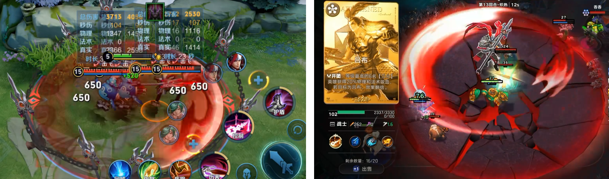
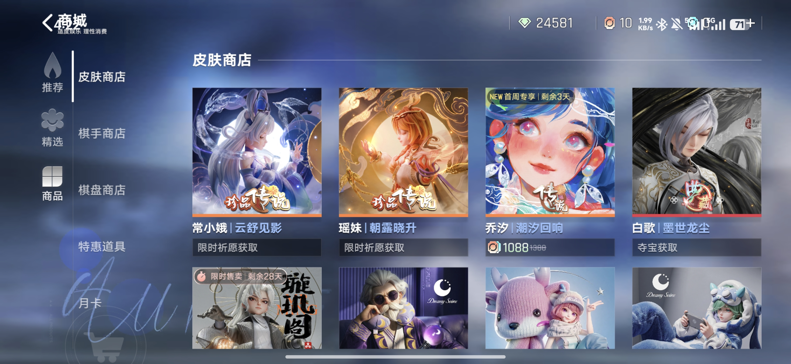
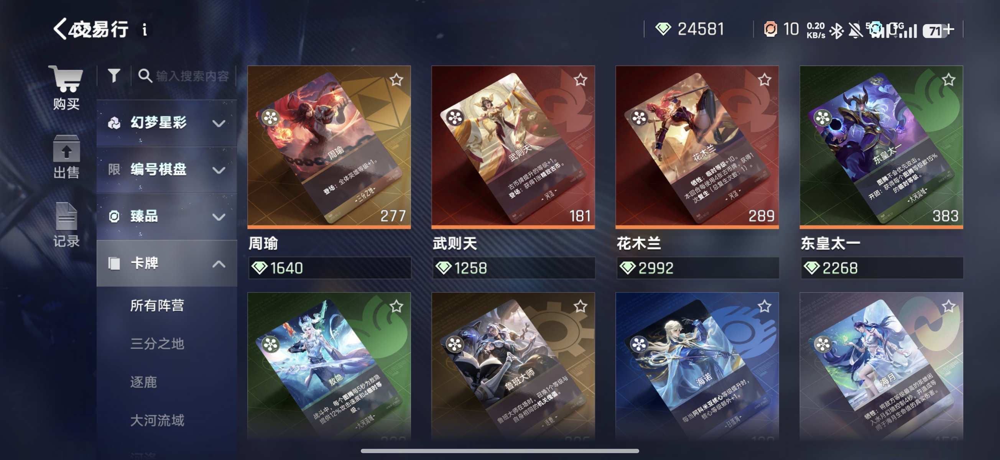
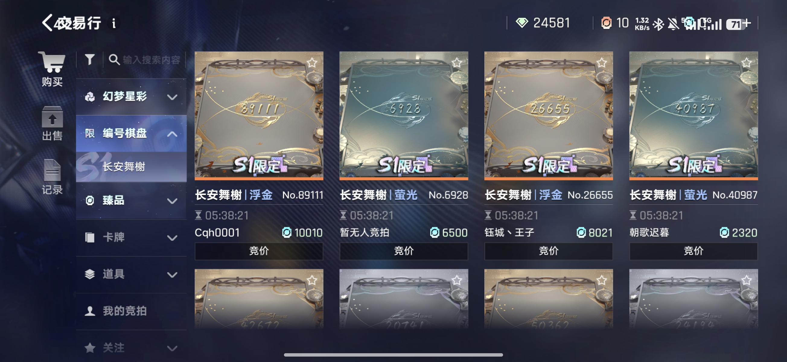
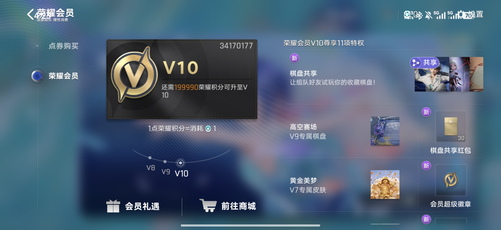
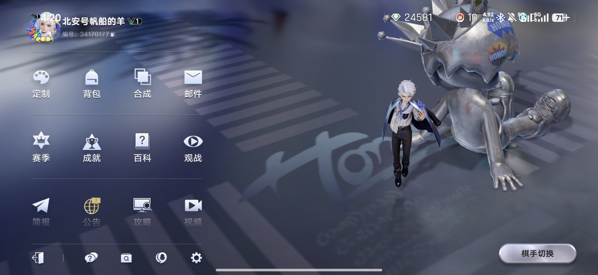
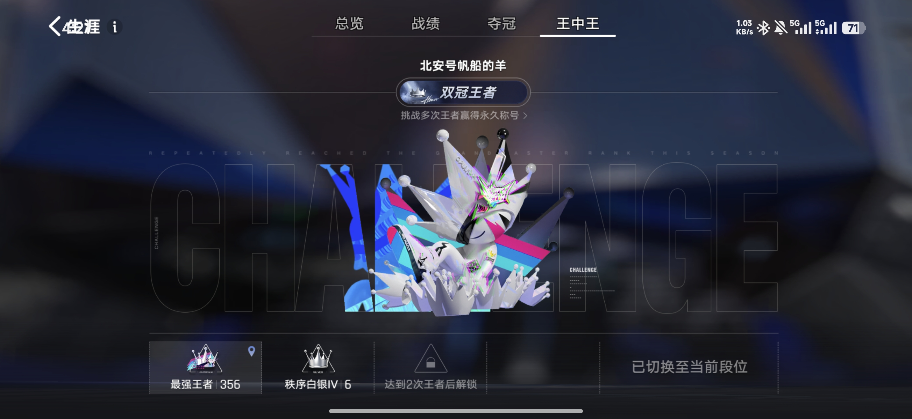
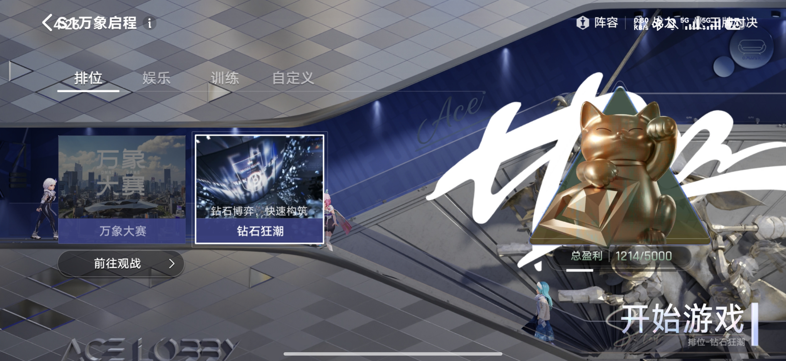

自走棋的门槛，首先是 IP 门槛
自走棋有制作门槛，也是高度依赖 IP 的品类，可视为围绕 IP 运营推出的一种玩法。从 Dota 自走棋，到云顶之弈、金铲铲，背后都依靠大 IP。大 IP 的天然优势，是降低玩家的认知成本，并在起步时拥有一定的粉丝基础。
用 IP 认知加机制差异化，切入“轻度用户 + 王者存量”。多数改动都在降低计算与记忆负担。
进入定位分析 ↗02 / 机制与 AI体验从“集卡”，变成了“搭齿轮”。灵宝 AI 采用朋友式陪伴，但具体怎么选仍由玩家决定。
进入机制与新手体验 ↗03 / 风险与迁移内容更新存在跟不上玩法消耗的风险。做减法要砍在认知成本上，而不是决策数量上。
进入风险与迁移启示 ↗核心是错位竞争，而不是正面替代。但降低负担，并不自动解决单局偏长问题。
降低入门门槛，不等于降低深度。做减法要砍在认知成本上，而不是决策数量上。
核心玩法
依靠棋手、棋子与锦囊牌的配合提升等级：体验从“集卡”，变成了“搭齿轮”。
自走棋有制作门槛，也是高度依赖 IP 的品类，可视为围绕 IP 运营推出的一种玩法。从 Dota 自走棋，到云顶之弈、金铲铲，背后都依靠大 IP。大 IP 的天然优势，是降低玩家的认知成本，并在起步时拥有一定的粉丝基础。
王者万象棋的角色技能设计基于王者荣耀。熟悉王者的玩家，可利用已有的刺客、AD 等角色定位认知，降低学习成本，并有助于提高留存率。其优势不是无需学习新规则，而是角色定位已有认知基础。

对比云顶之弈、金铲铲，万象棋加入了棋手系统，棋手技能可以影响战场。棋子不再只是按传统自走棋的方式凑羁绊，而是通过不同棋子的效果，与棋手技能配合构筑阵容，再提升棋子等级，形成一种养成模式。
万象棋常被概括为金铲铲与炉石酒馆战棋融合的自走棋。其玩法更接近自走棋框架下的肉鸽式养成：棋手升级给出的天赋三选一，与肉鸽升级三选一结构相似；养成方式转为棋子等级成长，使体验重心从自走棋的策略博弈，移向肉鸽式的数值养成。

数值养成有助于强化成长感知与成就反馈。镜头调度、高光动作和特效进一步强化观感。阵容成型不再主要是凑够羁绊数量，而是把阵营作为地基，依靠棋手、棋子与锦囊牌的配合提升等级：体验从“集卡”，变成了“搭齿轮”。
传统自走棋的关键反馈，是抽到关键牌的瞬间，主要靠运气；万象棋把反馈重心移到养成节点，主要靠投入。前者是随机抽卡反馈，后者是养成积累反馈。后者可能降低随机性带来的负面情绪，但需要更长的对局来兑现，也可能是单局时长难以缩短的原因之一。
装备可以随意切换、拆卸，小件可以直接合成成装。对比金铲铲需要两个小件合成、拆卸也有成本，万象棋降低了记忆与操作成本。但策略深度、耐玩性和玩家可开发的空间，也可能一起降低。
棋手不只是头像，而是带有全局技能、等级、专属天赋和秘技任务的角色，直接影响本局的玩法走向。棋手系统本质上，是把角色做成一个战术模板，让开局选择不只是选外观，而是选择一套后续构筑方向。

传统自走棋选秀，让低血量玩家优先挑选，对劣势方友好；优势方则需要等待，所需卡牌也可能被其他玩家先选走。万象棋改成拍卖会：所有人同时出价，价高者得，竞拍失败也不扣能量。 这一设计减少优势方被动等待，又增加了心理博弈。竞拍的能量进入分红池，血量越低分得越多，为弱势方提供补偿。

万象棋用 AI 陪伴引导与新手剧本承接新手。第一次对局预设了三套阵容剧本，并读取玩家王者荣耀账号里英雄熟练度或战力的 TOP5，赋予阵营权重，再据此选择灵宝推荐的阵容剧本。熟悉或偏好的英雄，有助于提高推荐阵容的接受度，初步建立情感连接。

如果没有王者账号，则默认推荐三分。在低阻力的新手剧本环境里，三分阵容有助于展示成长性与观赏性。剧本默认最后培养吕布，吕布到 100 级后的技能镜头变化，可强化成长节点的视觉反馈。
传统新手剧本大多采用固定逻辑，安排特定内容出现在固定节点。万象棋采用动态安排，保留自主操作，通过伪随机动态供给维持体验一致性。

相较传统强引导，灵宝 AI 采用朋友式陪伴，用口语和光环闪动提醒，但具体怎么选仍由玩家决定。玩家无需点击指定位置才能继续操作。提示用于解释棋子效果，保留理解后的自主选择，有助于降低对强制教程的抵触。
王者万象棋不是再做一个金铲铲，而是用 IP 认知加机制差异化，切入“轻度用户 + 王者存量”。定位与改动方向自洽：多数改动都在降低计算与记忆负担。 自走棋用户可能存在重合，但玩法预期不同。万象棋用养成反馈替代部分端游自走棋的计算深度，降低硬核门槛，以适配移动端碎片场景。核心是错位竞争，而不是正面替代；这也类似王者荣耀降低端游 MOBA 的硬核门槛来适配移动用户的路径。但降低负担，并不自动解决单局偏长问题。
AI 的阵容推荐和选择提示，有助于减少决策起步时的负担。辅助决策效果仍受阵容理解、操作与对局环境影响，不能保证段位提升。
能量收入采用每回合固定收入，取消利息，减少储蓄带来的复利优势。卖出通常只回收 1 能量；连胜与连败奖励也取消。整体方向是削弱领先者的复利效应，让玩家减少存钱收益、连胜连败等经济计算。
小件直接合成成装，可以随意拆卸，没有传统合成树。减负对象是配方记忆与操作成本；易用性提升并不代表策略深度没有损失。
所有付费内容均为外观，不提供数值或战斗属性加成。付费点包括英雄或棋手皮肤、专属棋盘、头像边框、交互动效、定制收藏卡、称号和攻击特效。 棋手皮肤主要通过直购与活动抽奖，棋盘一般通过直购与抽奖夺宝获得，估算典藏皮肤抽取保底约为 1560 元，与金铲铲价格接近。

交易行用于流通特别商品，例如棋盘编号、卡牌的卡面动画升级和部分小道具，商品价格随市场浮动。玩家上架需要支付费用，具有手续费性质。 官方还会发布实物周边拍卖，使用游戏内钻石货币。交易行可作为游戏内资源与道具的调控系统。

万象棋的商业化逻辑，与潮玩和卡牌盲盒相似：利用限定的特殊编号、颜色、款式区分品阶，让不同付费程度的玩家呈现明显身份标识。例如特殊棋盘编号 66668888，可强化稀缺性与辨识度。

VIP 系统也围绕身份表达搭建：V4 之前主要是小道具；V4 可定制个人 ID 后两位，V5 有专属皮肤，V6 有名片，V8 将 ID 定制扩展到四位并可组队分享皮肤，V10 则有棋盘共享与专属棋盘。 游戏里 1 元等于 10 积分，V10 需要 20 万积分，按此比例折算是 2 万元。

大厅采用潮玩风格与银白灰 UI，以金黄色提示替代红点，有助于保持视觉统一。 柔和提示也可能增加发现成本，需要兼顾视觉协调与提醒的可发现性。

大厅中央设置灵宝提示，可一键跳转活动并提示可领取的奖励。每个人物也对应一个系统入口，点击即可跳转，有助于缩短入口查找路径。 后续版本内容持续叠加，可能增加大厅的信息密度与入口管理成本。

上王者之后出现王中王系统，让玩家重新从低段位开始晋级，产生类似小号的效果。该机制可能分流不希望持续参与高段位对局的娱乐用户，也可支持与朋友组队，减少因段位差距而另建账号的需求。

娱乐副玩法每两周轮换一个，另有常驻的钻石狂潮。相对常规对局，钻石狂潮节奏更快、养成更容易，进一步强化了成长反馈。

王者 IP 有助于降低认知门槛，AI 引导有助于减少入门阻力，但不代表完全不需要学习新规则。差异化玩法提供新鲜感，打通王者荣耀社交体系则可利用已有关系链。
原稿描述单局时长比金铲铲短，但仍偏长，具体时长尚未核验。策略空间缩减可能影响耐玩性；当有效阵容选择有限时，内容更新存在跟不上玩法消耗的风险。
棋手与阵容绑定较深，可能增加平衡调整难度。偏即时战力与偏长线运营的棋手，可能拉开强度；选择非强势棋手时，也可能增加失败挫败感。不同成长时机的路线，不一定能靠简单数值调整平衡。
对比金铲铲，万象棋换阵成本更高。一旦开始培养某个方向，中途改道成本较高，容错空间可能更多集中在开局几回合的选择中。容易进入，不代表中途容易转向。
组队的有分同享主要提供分数兜底，不同于金铲铲组排通过互相给牌形成玩法联动；万象棋里组队玩家仍是对手，局内协作有限。 打通关系链不等于形成持续的局内合作。若内容消耗、平衡与转型问题未得到改善，长线运营存在风险。
从运气反馈转向养成反馈，将关键反馈从“抽到关键牌”移到“养到节点”，有助于减少对运气或系统偏向的负面归因。代价是需要更长对局来兑现，类似肉鸽游戏常见的二三十分钟单局。
降低入门门槛，不等于降低深度。取消利息、装备统一合成、卡价统一，削减的是记忆和计算负担；应保留并加强阵容与时机决策。做减法要砍在认知成本上，而不是决策数量上。 理想的减负方向，不代表产品已经完全实现了理想，仍需评估实际策略深度是否受损。
相比分散的红点，集成奖励领取入口有助于减少提示分散与逐项查找的负担。提醒可以统一管理，但也要兼顾柔和提示的可发现性。